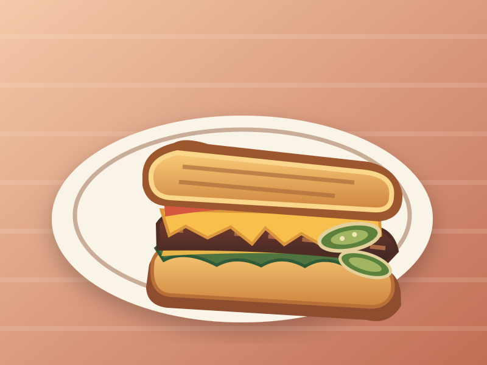
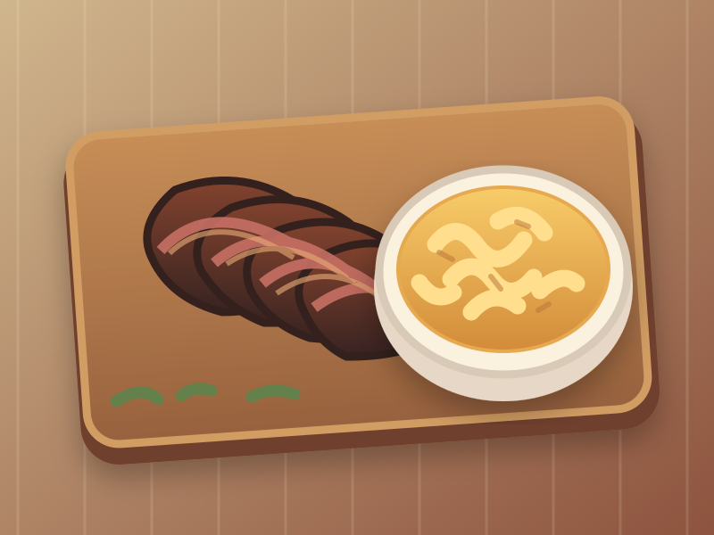

01 / Breakfast
Chicken & Waffles
Buttermilk waffles with crunchy fried chicken, honey butter, and warm syrup.
About 50 minutesServes 4
Get the recipe Welcome to a kitchen full of crispy chicken, slow-smoked barbecue, and the kind of comfort food that turns any day into Sunday supper.
Every recipe is written with simple ingredients, clear steps, and a generous helping of Southern charm.
Buttermilk waffles with crunchy fried chicken, honey butter, and warm syrup.

A juicy burger meets buttery Texas toast, cheddar, and tangy homemade sauce.

Low-and-slow smoky brisket with a bubbling pan of cheesy baked macaroni.
These are Southern-inspired comfort-food favorites, gathered in the spirit of the recipes that get handwritten, splattered with flour, and passed from one generation to the next.
No fancy equipment required for breakfast or lunch. For dinner, a smoker and a little patience bring the barbecue magic.